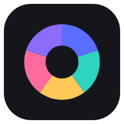

Reading that turns into the report.
Write in Documents with the PDF of the reading open in the next tab. Ask the assistant to pull the three best quotes from all of it.
- Documents
- PDF Editor

Atelier Lite DownloadA word processor, slides, a spreadsheet and a PDF editor in a single window, with one assistant that has read all of them.
Stop switching.
Start making.
Four apps, one window, one folder. Open a file and it opens in the right app, beside everything else you are working on.
Scroll through a day of making.
Write in Documents with the PDF of the reading open in the next tab. Ask the assistant to pull the three best quotes from all of it.
Keep the marks in a spreadsheet and ask the assistant for the formulas. Undo any change you do not like, then write the summary beside it.
Describe the deck. Atelier Lite picks a colour theme and a layout for every slide: stats, charts, a timeline, a quote. Every slide stays real, editable content.
Budget in a spreadsheet, the lease as a PDF, the plan in a document. Sign and mark up the PDF, and ask the assistant what the lease says about the deposit.
Every workspace remembers its open tabs and its conversation. Close the window on Friday, open the workspace on Monday, and it all comes back.
Open as many tabs as you like, including several of the same app. Press Alt+1 to Alt+4 to jump straight in.
It sees exactly what you let it see. The chips above the message box list every file it will read. Switch one off and it is out of the conversation.
It asks before it guesses, shows a plan for bigger jobs, and never edits your originals.
For the files that are nobody else's business: contracts, IDs, drafts, the thesis you are not ready to show anyone. Protect a workspace with a password, a PIN or a question of your own, and every file in it is encrypted until you unlock it.
Optional, per workspace. Keep your recovery key safe: without it and your secret, nobody can open the files.
Everything works without a connection. Run a local model through Ollama, LM Studio or llama.cpp and even the AI stays on your PC.
Install it and start. Nothing to sign up for, nothing that locks you out.
.docx, .pptx, .xlsx and PDF. Copy them, back them up, open them in anything else.
And only to the provider you chose. API keys are stored encrypted with Windows.
Atelier Lite for Windows. Install it, create a workspace, and bring your documents, slides, sheets and PDFs into one place.
Download Atelier Lite 1.0.0Windows installer, about 160 MB. Free of charge; no account.